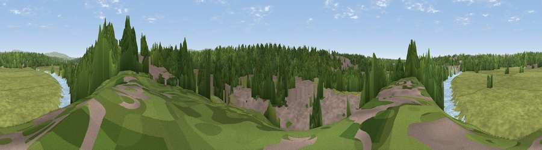

Viewpoint near Walton-le-Dale
#36317 in England · top 91% of its area beats it · near Walton-le-Dale · footpathWhere it is
The exact computed spot (SD 56175 28125). Click the marker for map links.
Public access: a public right of way passes within 36 m of this spot. Computed from Natural England's CRoW access layer and OpenStreetMap rights of way — not the legal definitive map. Always verify locally.
The view, rendered

A 360° render of this exact spot computed from the terrain model, tree cover and land cover — summer colours, afternoon light, calibrated against photographs of famous viewpoints. Real trees, hedges and buildings will differ in detail.
The panorama
Grey silhouette: terrain skyline in each direction (720 bearings, Earth curvature and refraction included). Dashed green: skyline with trees (+15 m) and buildings (+8 m) as obstacles. Blue strip: how far the ground is visible on each bearing.
Where the view opens
Wedge length = distance to the farthest visible ground on that bearing (vegetation-aware). Rings at 10, 25 and 50 km.
What fills the view
52% grassland · 26% woodland · 15% built-up · 7% water ·
Angular shares of the visible panorama (visual magnitude), not map area. Landscape diversity 0.52 (0–1 Shannon).
Key numbers
More beautiful places nearby
The staircase of upgrades: each row has a higher view potential than everything closer. Driving times are estimates from straight-line distance, calibrated against real road routing — check an actual route before setting out.
| Place | Direction | Drive | Score |
|---|---|---|---|
| Viewpoint near Samlesbury | NNE · 4 km | ~9 min | 38.5 |
| Viewpoint near Hoghton | ESE · 5 km | ~11 min | 63.3 |
| Viewpoint near Brindle | SSE · 6 km | ~13 min | 66.0 |
| Viewpoint near Pleasington | E · 9 km | ~17 min | 69.3 |
| Viewpoint near Pleasington | E · 9 km | ~18 min | 69.8 |
| Viewpoint near Mellor | ENE · 9 km | ~18 min | 71.2 |
| Viewpoint near Pleasington | E · 10 km | ~19 min | 73.6 |
| Viewpoint near Tockholes | ESE · 12 km | ~22 min | 74.7 |
53.74764, -2.66603 · source: screening · position refined by local search. Computed location — check access rights before visiting.